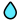

Click anywhere on the map to see water sites within a 500 meter radius.
Stand alone water sites will be highlighted with a light blue water icon .
BACKGROUND
The Zaatari refugee camp in Jordan is the largest camp to house Syrian refugees. Originally established in 2012 in response to the outbreak of the Syrian Civil War, it has
since developed into a permanent settlement. This map uses Open Street Map data of drinking water points to determine clean water access within 500 meters of where the user clicks on the map.